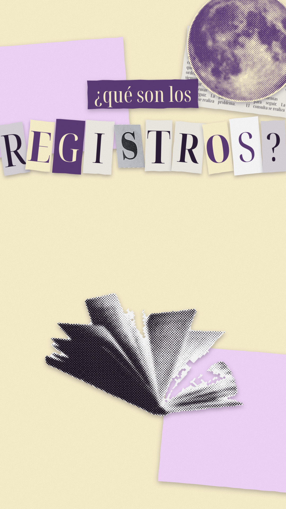
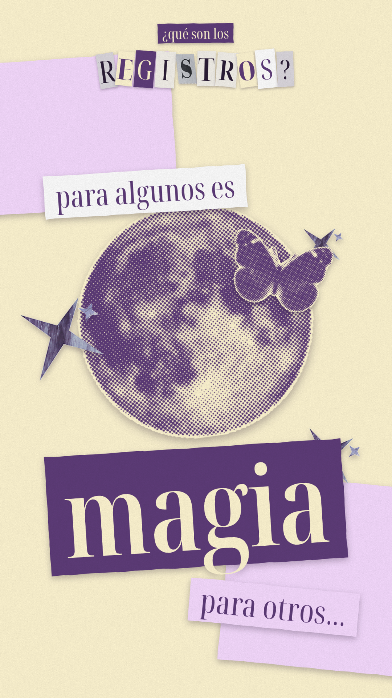
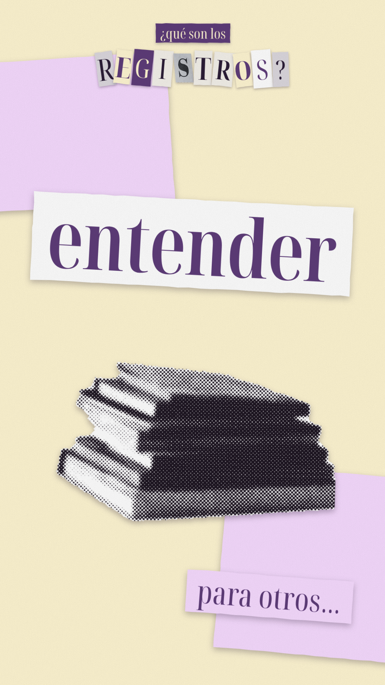
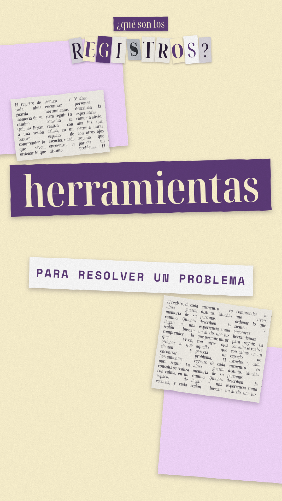
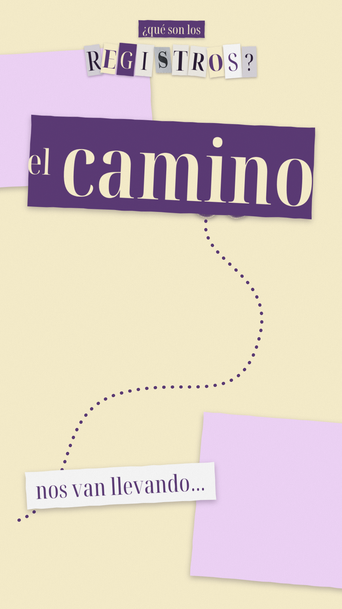
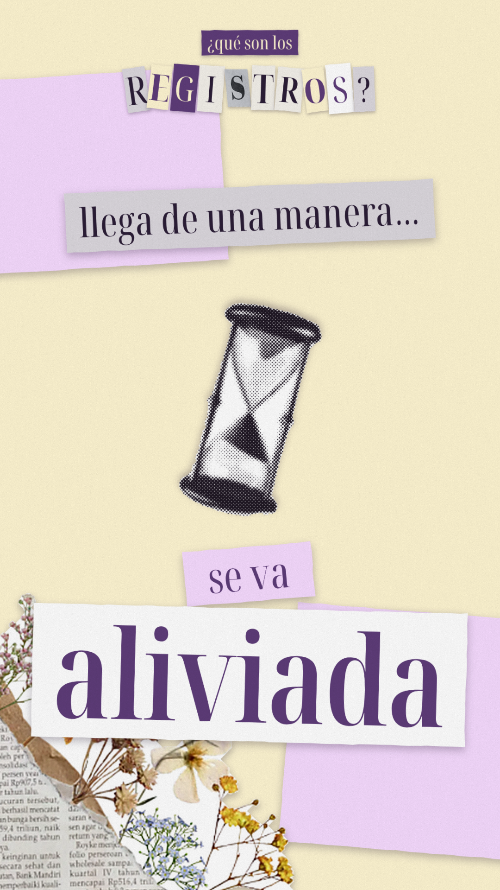
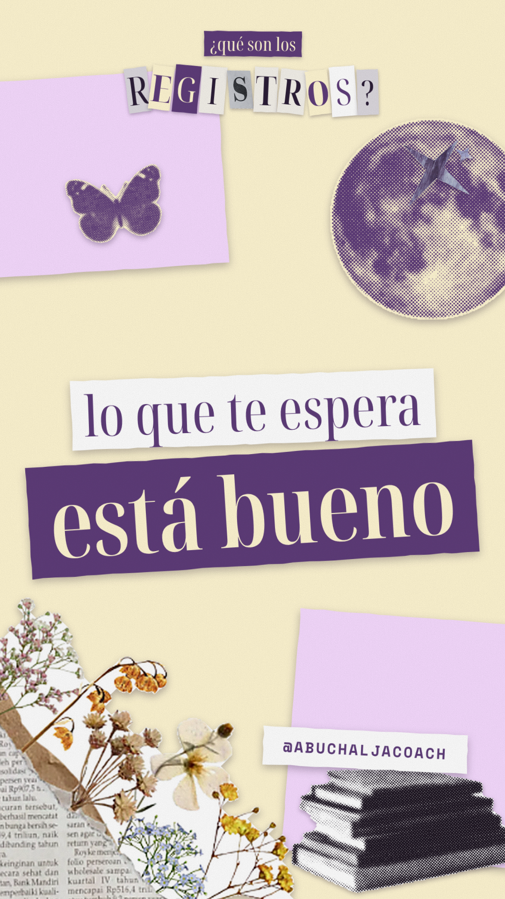

¿Qué son los registros? — stop motion collage
Solo voz de Elena · recortes reales en semitono · 12 fps · #fff6d2 · #5e3c79 · #f7dbff · Noto Serif Display Extra Condensed

Letras de nota de rescate (incluye la S real) caen una a una; libro abierto y luna en semitono.

La luna se acerca al centro; estrellas moradas y mariposa; tira "magia" en morado.

Pila de libros entra desde abajo; "entender" en tira blanca.

"como un COACH" en letras recortadas (C real); luego "herramientas" con recortes de periódico y etiqueta "para resolver un problema".

Un camino punteado se dibuja mientras la mariposa lo recorre en stop motion; "el camino".

Reloj de arena gira; "llega de una manera…" → "se va aliviada"; florece la esquina de flores y periódico.

Página final: luna, mariposa, libros, flores; "lo que te espera / está bueno" y @abuchaljacoach.